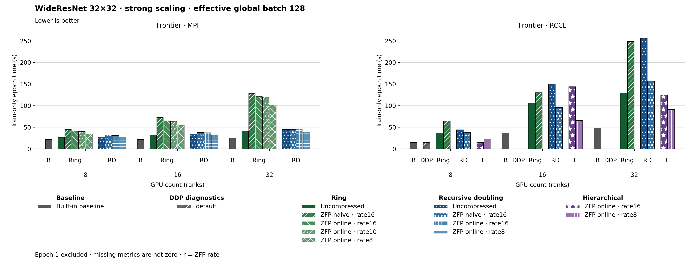

The figure uses bars. Families and methods are identified by text and patterns in addition to color. The metric is Train-only epoch time (s). Frontier · MPI, GPU count (ranks) 8: Built-in baseline has the lowest plotted value, 21.470. Frontier · MPI, GPU count (ranks) 16: Built-in baseline has the lowest plotted value, 22.170. Frontier · MPI, GPU count (ranks) 32: Built-in baseline has the lowest plotted value, 24.850. Frontier · RCCL, GPU count (ranks) 8: Built-in baseline has the lowest plotted value, 14.830. Frontier · RCCL, GPU count (ranks) 16: Built-in baseline has the lowest plotted value, 36.720. Frontier · RCCL, GPU count (ranks) 32: Built-in baseline has the lowest plotted value, 48.210. Epoch 1 is excluded. Values are medians; when repeated runs are available the selected repeat policy is median. These are not confidence intervals across repeated jobs. Missing or unrecorded metrics are omitted, not set to zero.
| Panel | GPU count (ranks) | Method | Value | Runs |
|---|---|---|---|---|
| Frontier · MPI | 16 | none | 22.17 | 1 |
| Frontier · MPI | 16 | ring | 32.43 | 1 |
| Frontier · MPI | 16 | ring_zfp_naive:16 | 72.85 | 1 |
| Frontier · MPI | 16 | ring_zfp_online_coll:16 | 64.9 | 1 |
| Frontier · MPI | 16 | ring_zfp_online_coll:10 | 63.84 | 1 |
| Frontier · MPI | 16 | recursive_doubling | 34.5 | 1 |
| Frontier · MPI | 16 | recursive_doubling_zfp_naive:16 | 37.83 | 1 |
| Frontier · MPI | 16 | recursive_doubling_zfp_online_coll:16 | 37.41 | 1 |
| Frontier · MPI | 16 | recursive_doubling_zfp_online_coll:8 | 32.56 | 1 |
| Frontier · MPI | 16 | ring_zfp_online_coll:8 | 54.73 | 1 |
| Frontier · MPI | 32 | none | 24.85 | 1 |
| Frontier · MPI | 32 | ring | 41.14 | 1 |
| Frontier · MPI | 32 | ring_zfp_naive:16 | 128.43 | 1 |
| Frontier · MPI | 32 | ring_zfp_online_coll:16 | 121.76 | 1 |
| Frontier · MPI | 32 | ring_zfp_online_coll:10 | 120.33 | 1 |
| Frontier · MPI | 32 | recursive_doubling | 44.91 | 1 |
| Frontier · MPI | 32 | recursive_doubling_zfp_naive:16 | 45.19 | 1 |
| Frontier · MPI | 32 | recursive_doubling_zfp_online_coll:16 | 45.69 | 1 |
| Frontier · MPI | 32 | recursive_doubling_zfp_online_coll:8 | 38.67 | 1 |
| Frontier · MPI | 32 | ring_zfp_online_coll:8 | 101.78 | 1 |
| Frontier · MPI | 8 | none | 21.47 | 1 |
| Frontier · MPI | 8 | ring | 27.05 | 1 |
| Frontier · MPI | 8 | ring_zfp_naive:16 | 45.33 | 1 |
| Frontier · MPI | 8 | ring_zfp_online_coll:16 | 41.69 | 1 |
| Frontier · MPI | 8 | ring_zfp_online_coll:10 | 40.4 | 1 |
| Frontier · MPI | 8 | recursive_doubling | 27.8 | 1 |
| Frontier · MPI | 8 | recursive_doubling_zfp_naive:16 | 31.65 | 1 |
| Frontier · MPI | 8 | recursive_doubling_zfp_online_coll:16 | 30.81 | 1 |
| Frontier · MPI | 8 | recursive_doubling_zfp_online_coll:8 | 27.86 | 1 |
| Frontier · MPI | 8 | ring_zfp_online_coll:8 | 34.32 | 1 |
| Frontier · RCCL | 16 | none | 36.72 | 1 |
| Frontier · RCCL | 16 | ring | 106.02 | 1 |
| Frontier · RCCL | 16 | ring_zfp_naive:16 | 130.14 | 1 |
| Frontier · RCCL | 16 | hierarchical_zfp_online_coll:8 | 65.98 | 2 |
| Frontier · RCCL | 16 | recursive_doubling | 149.72 | 1 |
| Frontier · RCCL | 16 | recursive_doubling_zfp_naive:16 | 95.72 | 1 |
| Frontier · RCCL | 16 | hierarchical_zfp_online_coll:16 | 144.085 | 2 |
| Frontier · RCCL | 32 | none | 48.21 | 1 |
| Frontier · RCCL | 32 | ring | 129.31 | 1 |
| Frontier · RCCL | 32 | ring_zfp_naive:16 | 248.47 | 1 |
| Frontier · RCCL | 32 | hierarchical_zfp_online_coll:8 | 91.31 | 2 |
| Frontier · RCCL | 32 | recursive_doubling | 255.76 | 1 |
| Frontier · RCCL | 32 | recursive_doubling_zfp_naive:16 | 157.63 | 1 |
| Frontier · RCCL | 32 | hierarchical_zfp_online_coll:16 | 124.38 | 2 |
| Frontier · RCCL | 8 | none | 14.83 | 1 |
| Frontier · RCCL | 8 | ring | 36.75 | 1 |
| Frontier · RCCL | 8 | ring_zfp_naive:16 | 64.67 | 1 |
| Frontier · RCCL | 8 | hierarchical_zfp_online_coll:8 | 23.08 | 2 |
| Frontier · RCCL | 8 | recursive_doubling | 44.43 | 1 |
| Frontier · RCCL | 8 | recursive_doubling_zfp_naive:16 | 38.21 | 1 |
| Frontier · RCCL | 8 | default | 15.09 | 1 |
| Frontier · RCCL | 8 | hierarchical_zfp_online_coll:16 | 15.03 | 2 |